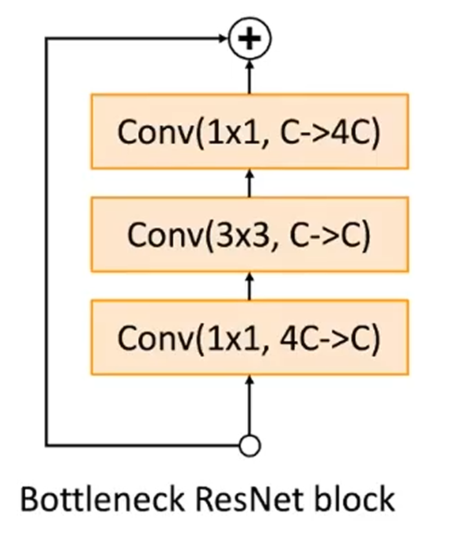

Image Classification
本节按 ImageNet 竞赛和经典论文的线索，整理 CNN 图像分类架构从 AlexNet 到 ResNet 的演进．
1. LeNet
LeNet 是最早发布的卷积神经网络之一，因其在计算机视觉任务中的高效性能而受到广泛关注．
其包含2个卷积块、3个全连接层．其中每个卷积块的基本单元是一个卷积层、一个激活函数、一个池化层．原始的 LeNet 采用 Sigmoid 激活与平均池化，而现在通常使用 ReLU 激活与最大池化．我们给出最初的 LeNet 实现代码，以及课程修改后的 LeNet：
1
2
3
4
5
6
7
8
9
10
11
12
13
14
15
16
17
18
19
20
21
22
23
24
25
26
27
28
29 import torch
from torch import nn
net = nn . Sequential (
# 第一个卷积块
nn . Conv2d ( 1 , 6 , kernel_size = 5 , padding = 2 ), nn . Sigmoid (),
nn . AvgPool2d ( kernel_size = 2 , stride = 2 ),
# 第二个卷积块
nn . Conv2d ( 6 , 16 , kernel_size = 5 ), nn . Sigmoid (),
nn . AvgPool2d ( kernel_size = 2 , stride = 2 ),
# 三个全连接层
nn . Flatten (),
nn . Linear ( 16 * 5 * 5 , 120 ), nn . Sigmoid (),
nn . Linear ( 120 , 84 ), nn . Sigmoid (),
nn . Linear ( 84 , 10 ))
# 其对应输出维度（Batch Size = 1）
Conv2d output shape : torch . Size ([ 1 , 6 , 28 , 28 ])
Sigmoid output shape : torch . Size ([ 1 , 6 , 28 , 28 ])
AvgPool2d output shape : torch . Size ([ 1 , 6 , 14 , 14 ])
Conv2d output shape : torch . Size ([ 1 , 16 , 10 , 10 ])
Sigmoid output shape : torch . Size ([ 1 , 16 , 10 , 10 ])
AvgPool2d output shape : torch . Size ([ 1 , 16 , 5 , 5 ])
Flatten output shape : torch . Size ([ 1 , 400 ])
Linear output shape : torch . Size ([ 1 , 120 ])
Sigmoid output shape : torch . Size ([ 1 , 120 ])
Linear output shape : torch . Size ([ 1 , 84 ])
Sigmoid output shape : torch . Size ([ 1 , 84 ])
Linear output shape : torch . Size ([ 1 , 10 ])
AlexNet 是第一个使用GPU训练的深度卷积神经网络，其与 LeNet 设计理念非常相似，但要更深，且使用 ReLU 激活与最大池化．
除此之外，AlexNet 使用了 Dropout 控制模型复杂度，Data Augmentation 增强图像数据。
牛津大学 Visual Geometry Group 的 VGG 网络 实现了使用块 的网络．块是一个神经网络层序列，例如在 AlexNet 中是卷积层、激活函数、池化层．VGG 块使用 \(3\times 3\) 卷积核（stride=1，padding=1，可能不止一个）、激活函数、\(2\times 2\) 池化层（padding=2），并且除了第一个块让通道数增加到64外，其他块均让通道数翻倍，直到达到512．
以 VGG16 为例，其由5个 VGG 块与三个全连接层组成，卷积层数量、输出通道数分别为 \((2, 64)、(2, 128)、(2, 256)、(3, 512)、(3, 512)\) ．
VGG 的设计理念：两个 \(3\times 3\) 的卷积层与一个 \(5\times 5\) 的卷积层拥有一样的感受野，但前者只有 \(18C_{\text{input}}C_{\text{output}}\) 个参数，而后者有 \(25C_{\text{input}}C_{\text{output}}\) 个．因此用简单的卷积层能用更少的参数与计算得到同样的效果．
上述网络都是通过卷积层与池化层提取空间结构，然后通过全连接层进行处理．NiN（网络中的网络） 在每个像素的通道上分别使用 MLP，减少了参数量的同时保留了空间结构，并且更不容易过拟合．
4.1 NiN Block
对单通道使用 MLP 本质上是 \(1\times 1\) 卷积．因此我们可以定义一个 nin_block，其在卷积层后接两个 \(1\times 1\) 卷积层：
def nin_block ( in_channels , out_channels , kernel_size , stride , padding ):
return nn . Sequential (
nn . Conv2d ( in_channels , out_channels , kernel_size , stride , padding ),
nn . ReLU (),
nn . Conv2d ( out_channels , out_channels , kernel_size = 1 ),
nn . ReLU (),
nn . Conv2d ( out_channels , out_channels , kernel_size = 1 ),
nn . ReLU ()
)
4.2 GAP
NiN 使用多个 NiN 块，最后的 NiN 块输出通道数等于分类数．此时输出为 \([N,10,H,W]\) （以类别数 10 为例），然后通过 Global Average Pooling（全局平均池化，GAP） 对每个通道整张图求平均，得到 \([N,10,1,1]\) 即 \([N,10]\) ，后者即为每个类别的得分．这样的好处是避免了 FC 层，减少了大量的参数．
GoogLeNet架构图：
5.1 Aggressive Stem
在开始阶段，GoogLeNet 使用了激进的下采样（\(7\times 7\) 卷积、\(3\times 3\) 最大池化），使得数据大小降低，参数量大量减少．
5.2 Inception
GoogLeNet 使用了含有并行路径的 Inception 块 ，从不同空间大小中提取信息．单个块架构如图所示：
中间两条通道的 \(1\times 1\) 卷积是为了减少通道数，从而减少第二个卷积层的参数量．四条路径都通过合适的 padding 使输入和输出的大小一致．最后将四条线路的输出在通道维度上合并（通常输出为 \([N, C, H,W]\) ，按通道合并即为 dim=1），构成 Inception 块的输出．
1
2
3
4
5
6
7
8
9
10
11
12
13
14
15
16
17
18
19
20
21
22
23 class Inception ( nn . Module ):
# c1--c4是每条路径的输出通道数
def __init__ ( self , in_channels , c1 , c2 , c3 , c4 , ** kwargs ):
super ( Inception , self ) . __init__ ( ** kwargs )
# 线路1，单1x1卷积层
self . p1_1 = nn . Conv2d ( in_channels , c1 , kernel_size = 1 )
# 线路2，1x1卷积层后接3x3卷积层
self . p2_1 = nn . Conv2d ( in_channels , c2 [ 0 ], kernel_size = 1 )
self . p2_2 = nn . Conv2d ( c2 [ 0 ], c2 [ 1 ], kernel_size = 3 , padding = 1 )
# 线路3，1x1卷积层后接5x5卷积层
self . p3_1 = nn . Conv2d ( in_channels , c3 [ 0 ], kernel_size = 1 )
self . p3_2 = nn . Conv2d ( c3 [ 0 ], c3 [ 1 ], kernel_size = 5 , padding = 2 )
# 线路4，3x3最大汇聚层后接1x1卷积层
self . p4_1 = nn . MaxPool2d ( kernel_size = 3 , stride = 1 , padding = 1 )
self . p4_2 = nn . Conv2d ( in_channels , c4 , kernel_size = 1 )
def forward ( self , x ):
p1 = F . relu ( self . p1_1 ( x ))
p2 = F . relu ( self . p2_2 ( F . relu ( self . p2_1 ( x ))))
p3 = F . relu ( self . p3_2 ( F . relu ( self . p3_1 ( x ))))
p4 = F . relu ( self . p4_2 ( self . p4_1 ( x )))
# 在通道维度上连结输出
return torch . cat (( p1 , p2 , p3 , p4 ), dim = 1 )
5.3 GAP
与 NiN 相同，GoogLeNet 在最后使用一个 GAP + \((1024\to 10)\) 的全连接层来实现分类而不是多个全连接层，减少了参数数量．
5.4 Auxiliary Classifiers
由于网络太深，早期梯度传播困难，其在中间层添加辅助分类器，其对图像进行分类，并与最终的分类结果一起计算 loss 并优化．
理论上来说，更深层网络的效果肯定比浅层更好，因为其完全可以复制浅层网络，并在多出来的网络使用恒等变换．但实际上深层网络更难优化，导致学习效果可能不如浅层网络．为了解决这个问题，我们需要让网络学习恒等函数变得容易．针对这一问题，何恺明等人提出了残差网络（ResNet） ．
6.1 Residual Block
与之前的网络类似，残差网络堆叠残差块 来实现功能．如图所示，残差块的核心设计理念是让网络学习目标输出 \(f(x)\) 与输入 \(x\) 的差 \(f(x)-x\) ．在这种情况下，只需要将网络参数置零即可轻松地学习到恒等变换．同时，只学习变化量会比学习全量 \(f(x)\) 更轻松．
ResNet-18/34 的残差块设计如下，当学习结果 \(f(x)-x\) 通道数与 \(x\) 不同时，需要对 \(x\) 接一层 \(1\times 1\) 卷积来改变通道数，才能相加．
6.2 Bottleneck Block
ResNet-50/101/152 的残差块使用的是 Bottleneck Block．其先使用 \(1\times 1\) 卷积压缩通道数，再使用 \(3\times 3\) 卷积提取空间信息，最后再使用 \(1\times 1\) 卷积将通道数还原．将昂贵的 \(3\times 3\) 卷积放在低通道数里做，能减小参数量，更适合构建深层网络．

6.3 ResNet Model
以 ResNet-18为例，其主要由三个类型组成：
Stem部分：\(7\times 7\) 卷积、BatchNorm、\(3\times 3\) 最大池化．
Res Stage：由多个 Res Block 组成，第一个 Block 需要负责变化通道数，后面的不需要．ResNet-18 由4个 Stage 组成，每个 Stage 有2个 Block．其中第一个 Stage 不改变通道数，即代码中的 first_stage．
OutPut：使用 GAP 与全连接层来输出分类结果．
代码实现
1
2
3
4
5
6
7
8
9
10
11
12
13
14
15
16
17
18
19
20
21
22
23
24
25
26
27
28
29
30
31
32
33
34
35
36
37
38
39
40
41
42
43
44
45
46
47
48
49
50
51
52
53
54
55 import torch
from torch import nn
from torch.nn import functional as F
# Res Block
class Residual ( nn . Module ):
def __init__ ( self , input_channels , num_channels ,
use_1x1conv = False , strides = 1 ):
super () . __init__ ()
self . conv1 = nn . Conv2d ( input_channels , num_channels ,
kernel_size = 3 , padding = 1 , stride = strides )
self . conv2 = nn . Conv2d ( num_channels , num_channels ,
kernel_size = 3 , padding = 1 )
if use_1x1conv :
self . conv3 = nn . Conv2d ( input_channels , num_channels ,
kernel_size = 1 , stride = strides )
else :
self . conv3 = None
self . bn1 = nn . BatchNorm2d ( num_channels )
self . bn2 = nn . BatchNorm2d ( num_channels )
def forward ( self , X ):
Y = F . relu ( self . bn1 ( self . conv1 ( X )))
Y = self . bn2 ( self . conv2 ( Y ))
if self . conv3 :
X = self . conv3 ( X )
Y += X
return F . relu ( Y )
# Res Stage
def res_stage ( input_channels , num_channels , num_residuals , first_stage = False ):
blk = []
for i in range ( num_residuals ):
# 如果不是第一个 Stage，那么第一个 Block 需要改变通道数并下采样
# 同时要用 1*1 卷积改变 x 通道数
if i == 0 and not first_stage :
blk . append ( Residual ( input_channels , num_channels ,
use_1x1conv = True , strides = 2 ))
else :
blk . append ( Residual ( num_channels , num_channels ))
return blk
# Net
stem = nn . Sequential ( nn . Conv2d ( 3 , 64 , kernel_size = 7 , stride = 2 , padding = 3 ),
nn . BatchNorm2d ( 64 ), nn . ReLU (),
nn . MaxPool2d ( kernel_size = 3 , stride = 2 , padding = 1 ))
b1 = nn . Sequential ( * resnet_block ( 64 , 64 , 2 , first_block = True ))
b2 = nn . Sequential ( * resnet_block ( 64 , 128 , 2 ))
b3 = nn . Sequential ( * resnet_block ( 128 , 256 , 2 ))
b4 = nn . Sequential ( * resnet_block ( 256 , 512 , 2 ))
net = nn . Sequential ( stem , b1 , b2 , b3 , b4 ,
nn . AdaptiveAvgPool2d (( 1 , 1 )),
nn . Flatten (), nn . Linear ( 512 , 10 ))
每一层的张量维度为：
Sequential output shape : torch . Size ([ 1 , 64 , 56 , 56 ])
Sequential output shape : torch . Size ([ 1 , 64 , 56 , 56 ])
Sequential output shape : torch . Size ([ 1 , 128 , 28 , 28 ])
Sequential output shape : torch . Size ([ 1 , 256 , 14 , 14 ])
Sequential output shape : torch . Size ([ 1 , 512 , 7 , 7 ])
AdaptiveAvgPool2d output shape : torch . Size ([ 1 , 512 , 1 , 1 ])
Flatten output shape : torch . Size ([ 1 , 512 ])
Linear output shape : torch . Size ([ 1 , 10 ])
2026年6月11日 12:45:17
2026年5月3日 17:30:54
{kind=link}
{kind=link}
{kind=link}
{kind=link}


{kind=link}